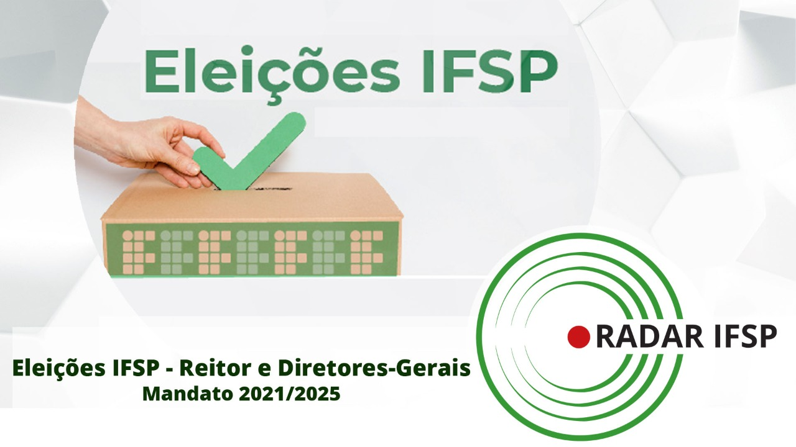

Todos os alunos e servidores podem votar; acesse aqui a cabine de votação online do seu câmpus

Programação reunirá iniciativas para aproximar pesquisadores e atividades culturais

Bolsa de R$ 400,00 será paga pelo período de três meses

Maratona de programação do IFSP será realizada online, no dia 31 de outubro; inscrições até 26 de outubro